Git
the stupid content tracker
Découvrir, Comprendre, Utiliser
Par Davy MÉLINA - Octobre 2015
La gestion de version
Pourquoi ?
Suivre l'évolution d'un ou d'un ensemble de fichiers
au cours du temps.
Les types de VCS
La méthode CPOLD (à bannir)
La méthode Local: RCS (rel: 1982)
Les méthodes Centrales (CVCS):
CVS (rel: 1990), SVN (rel: 2000)
Les méthodes Distribuées (DVCS):
Git (rel: 2005), Mercurial (rel: 2005), ...
Histoire de Git
Des origines liées au developement du noyau Linux.
Fort de l'experience de BitKeeper...
Le nouveau DVCS devait être:
- rapide,
- de conception simple,
- de supporter le développent non linéaire (branches parallèles),
- distribué,
- capable de gerer le développement du noyau Linux.
Git versus les autres
Comment sont considéré les données dans Git ?
Des instantanés, pas de différences.
Snapshots, not Differences.
Les autres VCS
Stockage des modifications par différence.

Git
Stockage des modifications par instanné.

Fonctionnalités de Git
Opérations locales (presque toutes)
Intégrité (SHA1)
b40508769cb0aac22d9f73c8669c3a13f5e9cf0b
Concept d'ajout de données
Les 3 états
Les 3 états

Cycle de vie des états des fichiers

Les bases
Les premier pas
Paramètrer son identité dans le fichier ~/.gitconfig
$ git config --global user.name "Davy MELINA"$ git config --global user.email davy.melina@gmail.com$ git config --global core.editor vimVérifier les paramètres
$ git config --listUn premier workflow simple
Initialiser un dépôt Git
$ git initAjouter des fichiers dans l'espace de staging
$ git add *.go$ git add README.mdCommiter des fichiers
$ git commit -m "Initial import."Déplacer un fichiers
$ git mv version.go common.go$ git commit -m "The rewrite begin."Supprimer un fichiers
$ git rm hello.go$ git commit -m "Clean dead code."Analyser
Vérifier l'état des fichiers
$ git statusOn branch develop
Changes to be committed:
(use "git reset HEAD <file>..." to unstage)
modified: common.go
Changes not staged for commit:
(use "git add <file>..." to update what will be committed)
(use "git checkout -- <file>..." to discard changes in working directory)
modified: cmd/haven.go
Untracked files:
(use "git add <file>..." to include in what will be committed)
LICENSEVoir les modifications des fichiers
$ git diffVoir les modifications des fichiers en staging
$ git diff --stagedindex 8ebb991..643e24f 100644
--- a/CONTRIBUTING.md
+++ b/CONTRIBUTING.md
@@ -65,7 +65,8 @@ branch directly, things can get messy.
Please include a nice description of your changes when you submit your PR;
if we have to read the whole diff to figure out why you're contributing
in the first place, you're less likely to get feedback and have your change
-merged in.
+merged in. Also, split your changes into comprehensive chunks if your patch is
+longer than a dozen lines.
If you are starting to work on a particular area, feel free to submit a PR
that highlights your work in progress (and note in the PR title that it'sVisualiser l'historique des commits
$ git logcommit 4d7aee3c678f9fffe9911be79179de14bddc6914
Author: Davy MELINA <davy.melina@gmail.com>
Date: Thu Oct 1 16:49:57 2015 +0200
Add TODO
commit 43523ba7a616db94bdff240ef2d762c1e6af4ee5
Author: Davy MELINA <davy.melina@gmail.com>
Date: Thu Oct 1 16:45:17 2015 +0200
Import new dataschema
Mieux encore
$ git log --graph --pretty=format:'%Cred%h%Creset -%C(yellow)%d%Creset %s %Cgreen(%cr) %C(blue)<%an>%Creset' --abbrev-commit* 49e08fa - (HEAD -> develop) Merge tag 'v0.1' into develop (7 seconds ago) <Davy MELINA>
|\
| * 17bedb2 - (tag: v0.1, master) Merge branch 'release/v0.1' (27 seconds ago) <Davy MELINA>
| |\
| |/
|/|
* | 030c956 - First public beta (58 seconds ago) <Davy MELINA>
|/
* 38e8c59 - Initial commit (73 seconds ago) <Davy MELINA>
$ git config --global alias.lg "log --graph --pretty=format:'%Cred%h%Creset -%C(yellow)%d%Creset %s %Cgreen(%cr) %C(blue)<%an>%Creset' --abbrev-commit"Annuler des actions
Modifier le dernier commit
$ git commit --amendUn exemple ?
$ git add README.md$ git add *.go$ git commit -m "Initial import."$ git add LICENSERécuperer un fichier
$ git checkout -- LICENSERevenir à un snapshot
$ git reset --hard <commit>Enlever du staging un fichier
$ git reset HEAD <file>Un exemple ?
$ git add .$ git statusOn branch master
Changes to be committed:
(use "git reset HEAD <file>..." to unstage)
modified: README
modified: hello.go
$ git reset HEAD hello.go$ git statusOn branch master
Changes to be committed:
(use "git reset HEAD <file>..." to unstage)
modified: README
Changes not staged for commit:
(use "git add <file>..." to update what will be committed)
(use "git checkout -- <file>..." to discard changes in working directory)
modified: hello.go
Ignorer des fichiers
Le fichier .gitignore
*.[oa]
*~
Régles du fichier .gitignore
- Les lignes vides ou commençant par # sont ignorées
- Pattern suivi d'un / considéré comme répertoire (eg: public/)
- Ligne qui commence par ! indique l'inclusion du pattern malgrès les régles précédentes
Exemple de fichier .gitignore
# ignorer les fichier *.a mais suivre lib.a
*.a
!lib.a
# ignorer uniquement le fichier TODO à la racine du projet
/TODO
# ignorer tous les fichiers dans le répertoire build
build/
# ignorer doc/notes.txt, mais pas doc/server/arch.txt
doc/*.txt
# ignorer tous les fichiers .txt sous le répertoire doc/
doc/**/*.txtLes étiquette / Les tags
Voir les tags
$ git tagv0.1
v0.2
v0.3Voir les tags d'un motif particulier
$ git tag -l "v1.8.*"v0.1.8-rc0
v1.8.2
v1.8.3Créer un tag simple sur le dernier commit
$ git tag v0.2Créer un tag simple après coup
$ git tag v0.1 112772eCréer un tag annoté
$ git tag -a v0.3 -m "Beta public"Voir un tag annoté
$ git show v0.3tag v0.3
Tagger: Davy MELINA <davy.melina@gmail.com>
Date: Fri Oct 16 12:11:26 2015 +0200
Beta public
commit 57be19774152f2615b8795594f9d97ae1bd16e0b
Author: Davy MELINA <davy.melina@gmail.com>
Date: Wed Oct 14 18:01:15 2015 +0200
test
Les branches
Définition
Créer une branche signifie diverger de la ligne principale de développement et continuer à travailler sans impacter cette ligne.
Concrètement ?
$ git add README test.rb LICENSE
$ git commit -m "initial commit of my project"
Et si on commits encore ?

Vue globale d'une branche

Une branche égal un pointeur
Ce pointeur référence un commit
La branche par défaut sur Git est master
Manipuler les branches
Les bases
Voir les branches
$ git branchCréer une branche
$ git branch <branch>Effacer une branche
$ git branch -d <branch>Se déplacer dans une branche
$ git checkout <branch>Merger une branche
$ git merge <branch>Un exemple ?
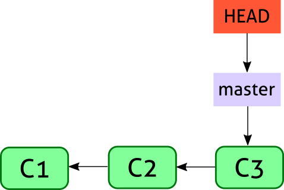
Créer une branche locale: issue53
$ git branch issue53Se déplacer dans la branche locale: issue53
$ git checkout issue43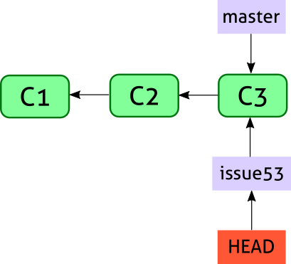
On travail un peu !
$ vim client.go client_test.go server.go$ git add client_test.go
$ git commit -m "Change the test"
$ git add client.go
$ git commit -m "Fix return"
$ git add server.go
$ git commit -m "Change the default HTTP timeout"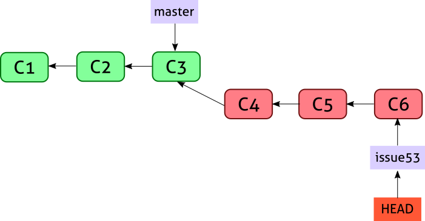
Merge (Fast Forward)
$ git checkout master$ git merge issue53
Updating f0b34ad..4c0bbfc
Fast-forward
client.go | 3 ++-
client_test.go | 3 ++-
server.go | 3 ++-
3 file changed, 6 insertions(+), 3 deletion(-)
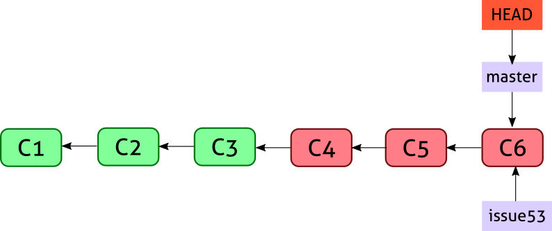
Merge (No Fast Forward)
$ git merge -no-ff issue53 -m "Merge branch 'issue53'"
Merge made by the 'recursive' strategy.
client.go | 4 ++++
client_test.go | 4 ++++
server.go | 4 ++++
3 file changed, 12 insertions(+)
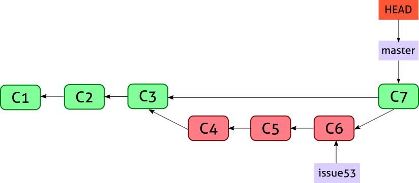
Un autre exemple ?
Hotfix !
$ git checkout master$ git checkout -b hotfix$ vim client.go$ git add client.go
$ git commit client.go -m "Hotfix 001"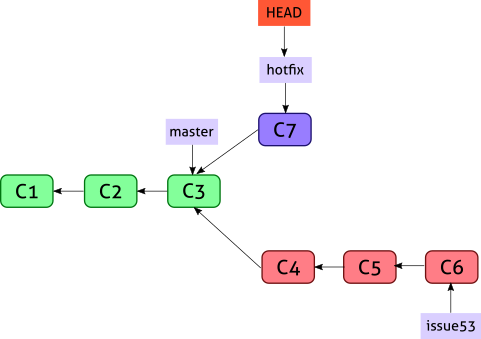
C'est ok pour le hotfix ?
$ git checkout master$ git merge hotfix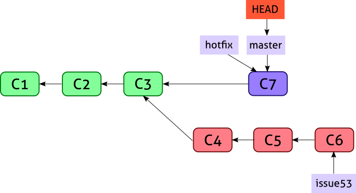
Et mon issue53 ?
$ git merge issue53
3-way merge algorithm
- Le meilleur ancêtre commun des deux branches
- Le snapshot de la branche d'origine
- Le snapshot de la branche destination
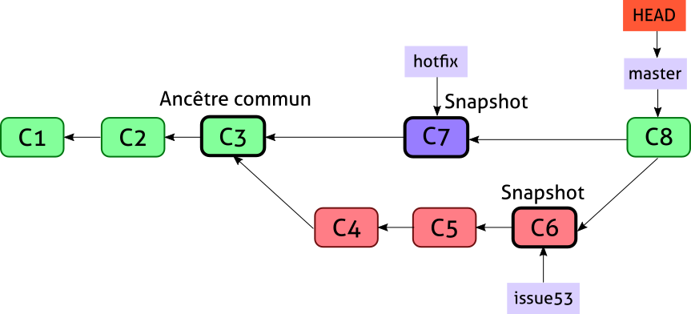
C8 est un merge commit qui a deux parents
Gêrer les conflits
$ git merge doc123Auto-merging README.md
CONFLICT (content): Merge conflict in README.md
Automatic merge failed; fix conflicts and then commit the result.
<<<<<< HEAD
davy anilem
=======
davy melina
>>>>>>> doc123$ git add README$ git commitRebase
Cherry-pick
Stash
Les dépôts distants
Les origines
Une origine correspond à dépôts distant
Un dépôt local peut avoir plusieurs origines
Une origine contient une ou plusieurs branches
Les bases
Voir les origines
$ git remote -vorigin git@github.com:dmelina/apprendre-git.git (fetch)
origin git@github.com:dmelina/apprendre-git.git (push)
Ajouter une origine
$ git remote add chezwam https://chez.wam/apprendre-git.git$ git remote -vchezwam https://chez.wam/apprendre-git.git (fetch)
chezwam https://chez.wam/apprendre-git.git (push)
Renommer une origine
$ git remote rename chezwam chezwatEffacer une origine
$ git remote rm chezwatAvoir plus d'informations sur une origine
$ git remote show origin* remote origin
Fetch URL: git@github.com:dmelina/apprendre-git.git
Push URL: git@github.com:dmelina/apprendre-git.git
HEAD branch: master
Remote branches:
master tracked
develop tracked
Local branches configured for 'git pull':
master merges with remote master
develop merges with remote develop
Local refs configured for 'git push':
master pushes to master (up to date)
develop pushes to develop (fast-forwardable)
Premier pas avec un dépôt distant
Cloner un dépôt distant (SSH)
$ git clone git@github.com:dmelina/apprendre-git.gitPousser des commits sur un dépôt distant
$ git push$ git push -u origin developPousser des commits et les tags sur un dépôt distant
$ git push --tagsRécuper des commits
$ git pullEffacer une branche remote
$ git branch -d <branch>$ git push --all --pruneGit Flow
Création d'une feature
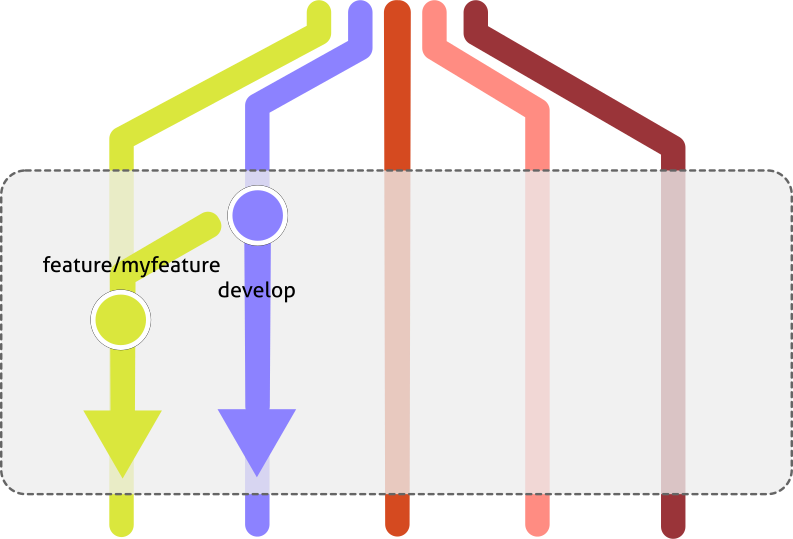
Merge de la feature
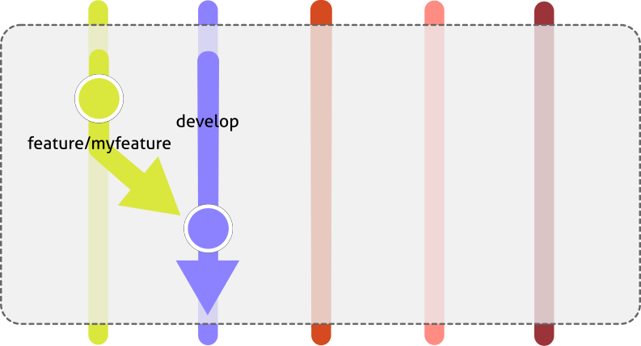
Préparation de la release
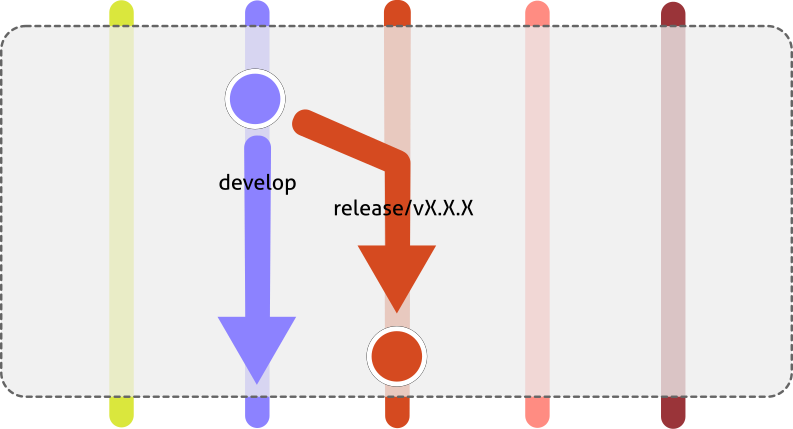
Merge de la release
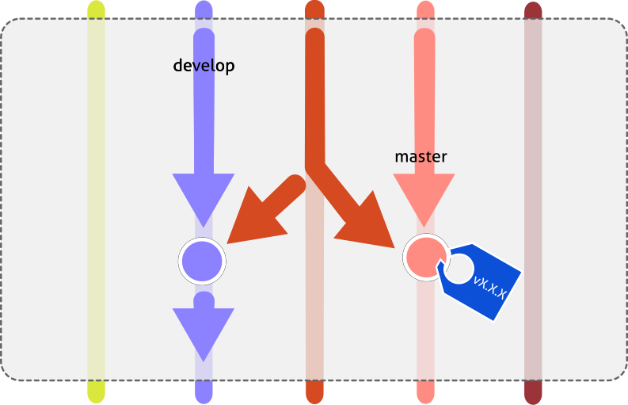
Préparation d'un hotfix
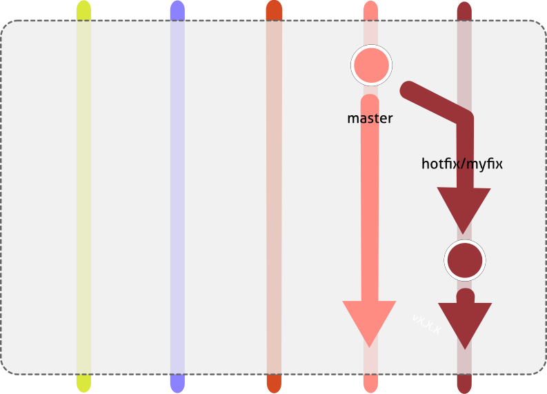
Merge du hotfix et backport
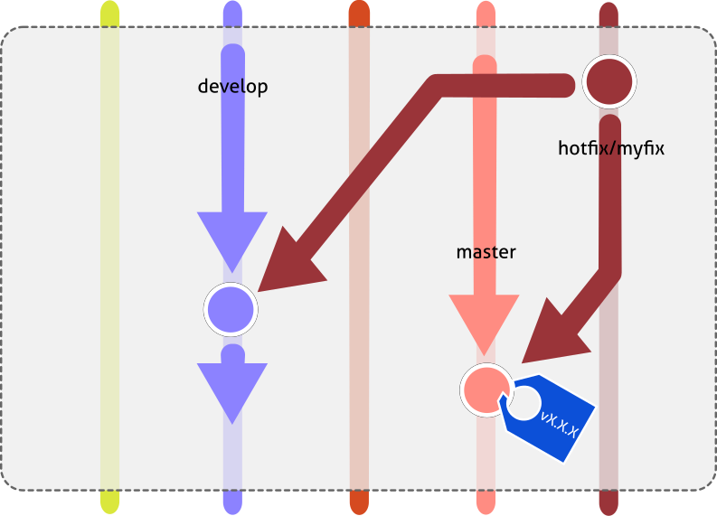